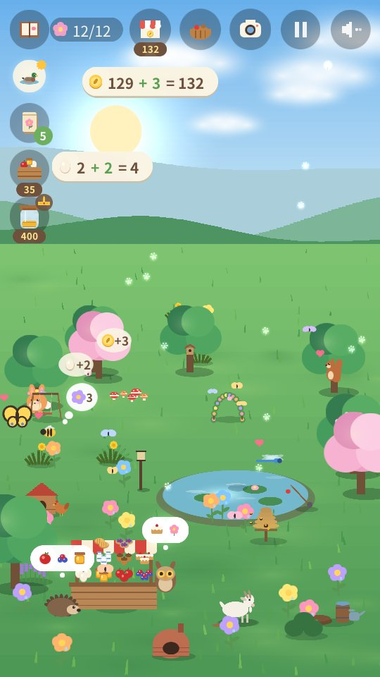
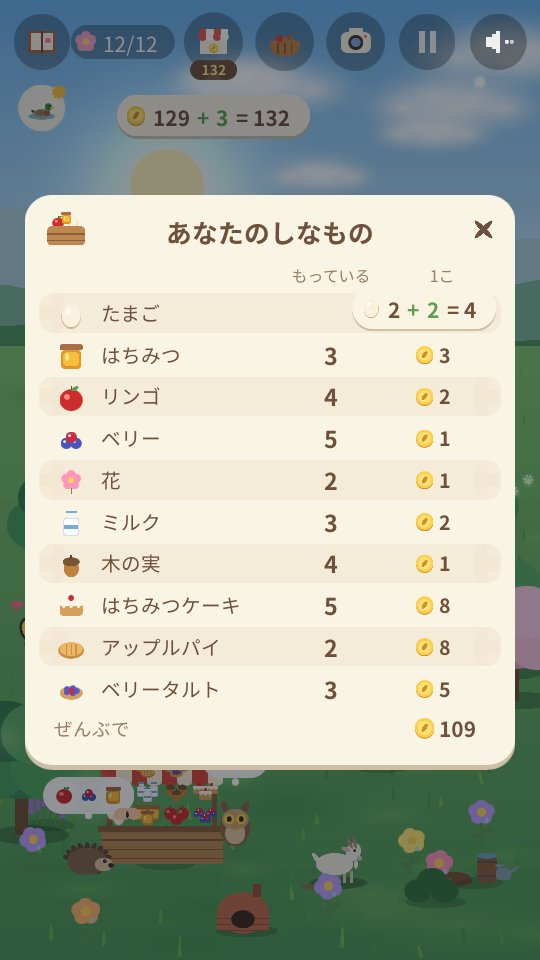
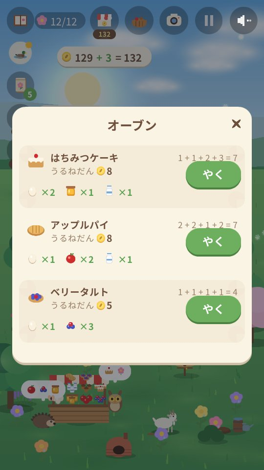
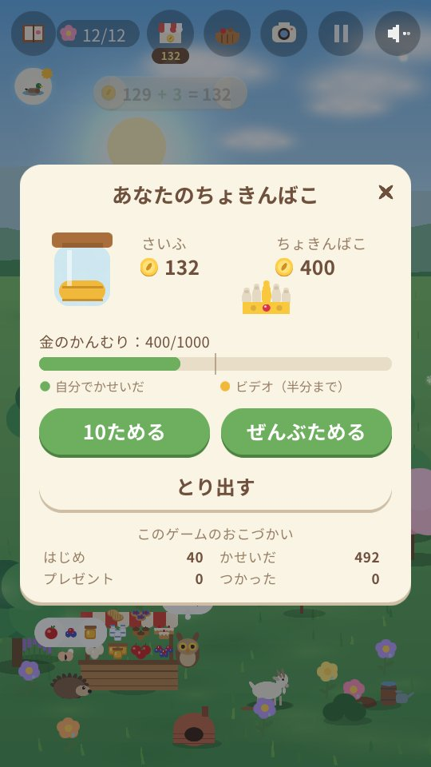

Arnoob Land
子ども向けの、おだやかな自然のゲーム

しずかな庭があなたの助けを待っています。小さなうさぎが、たねを1つぶずつまいて、ここをもう一度おうちにしたいと思っています。花をうえて、池をつくり、おやつをおいて、だれがあそびに来るか見てみよう。きせつごとに新しいどうぶつの友だちがやってきます。春はミツバチとカモ、夏はカメとハチドリ、秋はキツネとアナグマ、冬はシロフクロウとカワウソ。
- おだやかで、やさしい： 時間せいげんなし、へるスコアなし、しっぱいもなし。
- 自然の音だけ： 風、水、雨、鳥、どうぶつの声。音楽はありません。
- 4つのきせつと80ぴきのどうぶつ と友だちになれて、金色のどうぶつやめずらしいしゅんかんも見つかります。
- 月を見よう： 毎ばん少しずつ、新月からまん月になり、またもどります。フクロウはまん月の夜が大すき。
- しゃしんをとろう： どうぶつの友だちをアルバムに。しゃしん1まいごとにコインが1まい。
- 友だちを大切にすることを学ぼう： どうぶつがそれぞれ何をひつようとしているか気づいて、おうち（池、丸太の山、ベリーのしげみ…）をつくってあげると、新しい友だちが早く来てくれます。おねがいをかなえたり、2ひきの友だちをいっしょにあそばせたり、花をプレゼントしたりして、友じょうが育つのを見まもろう。
- 小さなのうじょうをいとなもう： にわとりにえさをあげ、みつばちとヤギのせわをして、リンゴやベリーや花をつみ、にぎやかなお店で買いに来た友だちにうろう。買ったものは半分のねだんでうれます。でも池、草花、たね、木はうれません。
- にわのおてつだい： 草をぬき、おちばをあつめ、雪をどけて、たいひの山をいっぱいにすると、とれるものがふえて、のうじょうも早くなります。花や木に水もあげよう。おてつだいするたびにレベルが上がります。
- おかしをやいて、ちゅうもんにこたえよう： たまご、ミルク、はちみつ、リンゴ、ベリーで、ケーキやパイやタルトやジャムをつくると、高くうれます。友だちがちゅうもんをもってきたら、お会計をたしざんしよう。
- あそびながら数えよう： たまごをあつめたりうったり、コインをかせいだりつかったりするたびに、3 + 2 = 5 のようなかんたんな計算が出ます。
- ちょきんを学ぼう： コインをちょきんばこに入れて、毎日少しずつふえるのを見ながら、金のかんむりのためにためよう。
- 金のかんむりを少しずつつくろう： ちょきんすると金がたまり、友だちが3つのほうせきをもってきてくれます。
- どのきせつにも、おだやかなミニゲーム： 魚つり（魚はまた水にもどります）、ホタルあつめ（あとでとんでいきます）、秋の木の実とリンゴのしゅうかく、雪のとりでづくり。
- 友だちとかくれんぼ： 5ひきと友だちになったら、友だちは庭のあちこちにかくれたり、いっしょにあそんだりします。みんなと友だちになると、金色の友だちもよく来るようになります。
- 8つの言語： 英語、アラビア語、中国語（簡体字）、フランス語、ドイツ語、日本語、ロシア語、スペイン語。ゲームはスマートフォンの言語ではじまり（それ以外の言語のときは英語）、タイトル画面の地球のボタンでかえられます。ゲームは英語で書かれ、ほかの7つの言語はAIの助けをかりてほんやくしました。
- 長くて、おだやかなたび： 何日もかけて1年ぜんぶをあそぶことも、1つのきせつだけのみじかいゲームをあそぶこともできます。庭はあそびながらほぞんされます。
- すきなら、ゆめの庭も： ブランコ、小さなはし、ふんすい、ツリーハウスなどのためにちょきんしよう。友だちがそれをつかい、4ひきのひみつの友だちが見に来るかもしれません。
庭のようす




保護者のみなさまへ
アカウント、チャット、課金はありません。動画は、お子さまが自分で見ることを選んだときだけ流れ、ゲーム内の小さなプレゼントがもらえます（売るためのしなもののかご、少しのコイン、庭へのびっくりプレゼント、たね、おやつ）。
プライバシーポリシー app-ads.txt